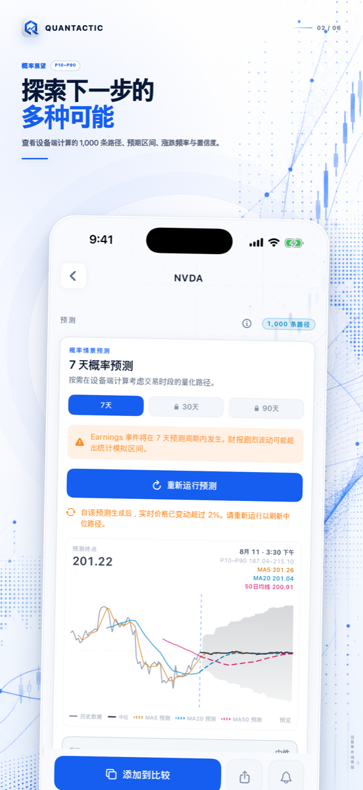
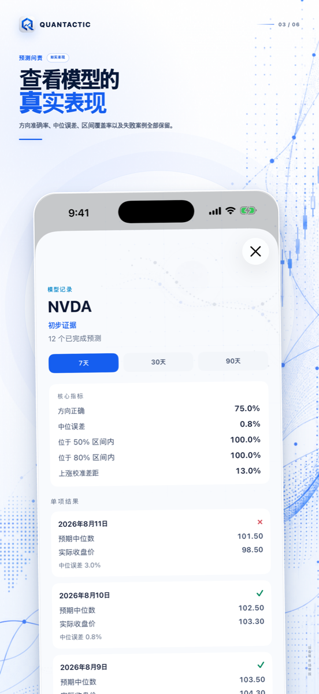
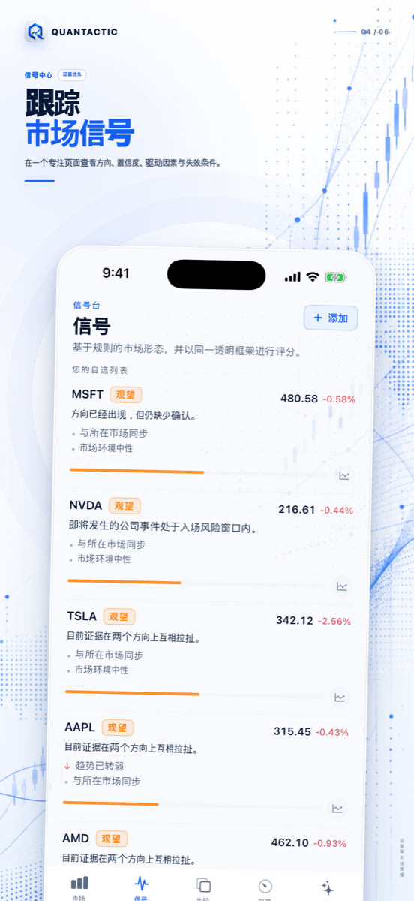
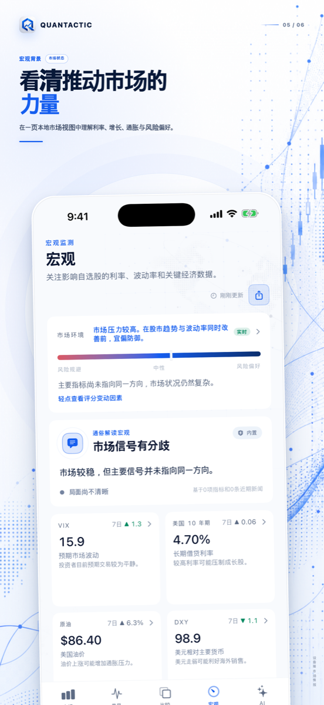
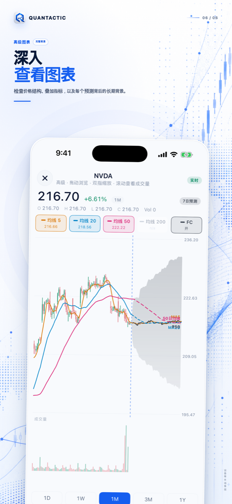

QUANTACTIC 1.3 · 隐私优先
清晰看懂市场。
保留每一份依据。
面向 iPhone 的私密市场研究台，将设备端 AI、可解释信号、概率型预测、宏观背景与精美分享卡片整合在一个从容的流程中。
iPhone · iOS 26 或更高版本 · 无需账户或券商连接
概率，而不是预言
探索区间，然后检验模型。
查看 7 日、30 日与 90 日情景，再将已完成预测与真实结果比较。方向准确率、误差、区间覆盖率和每次未命中都会保留。



展示依据的信号
看清什么支持分析，什么使其失效。
规则型信号将方向、置信度、量化驱动因素、风险与失效条件放在一起。没有黑箱，也不虚构催化因素。
一个研究台
宏观背景与图表深度，远离噪音。
集中查看利率、波动率、原油、美元、经济事件、K 线、成交量、均线、支撑阻力与预测叠加层。


QUANTACTIC PRO
更深入，无需激励广告。
解锁无限 7 日预测、完整 30 日与 90 日情景、更深入模型依据、扩展 AI 和更高研究额度。
完整预测
无限 7 日运行与完整 30 日、90 日概率区间。
模型可核验
持续查看方向、误差、区间覆盖与个别结果。
深入依据
更多信号、风险与失效条件细节。
私密 AI
在支持设备上使用更多引导式市场问题。
免费用户每天可运行一次 7 日预测。额外运行仅在主动选择观看激励广告或升级 Pro 时提供，页面导航期间不会显示广告。
约节省 33% · 持续研究的最佳选择
下载前，先看清答案。
Quantactic 会执行交易吗？
不会。Quantactic 不连接券商、不执行交易、不接受存款，也不管理投资。
预测是保证吗？
不是。预测是概率型情景，不是目标价、交易指令或保证。
哪些内容保留在 iPhone？
自选股、偏好、预测记录和支持的对话按隐私政策保存在本地。行情、新闻、购买和广告需要网络服务。
免费用户何时看到广告？
仅在用完每日免费预测后，主动选择观看激励广告以获得一次额外运行时。没有导航广告。